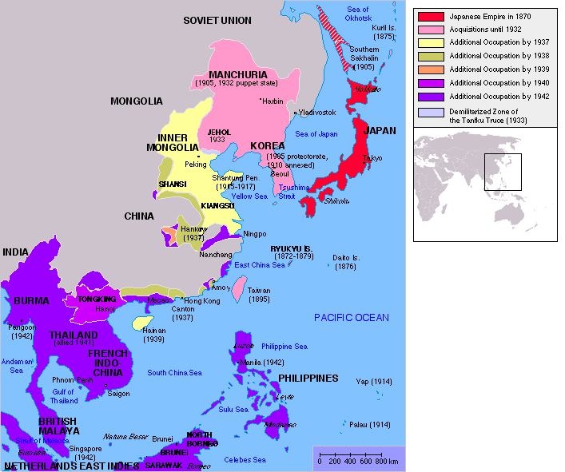

2020-10-11 06:45
吃饱了撑着回来了，网还没通，先把最近耳闻目睹搜集的情报备份下来。
简单说，前些天酗酒的时候，旁边就是一帮身着大手竞技俱乐部队服的家伙，以北京口音为主夹杂其它官话方言。酒酣耳热高谈阔论的时候还是不打自招爆料泄漏了大批国家机密兼宇宙奥秘，其中提到了从足协主席到军委主席的高第良将相关内容。
话头是从世界杯开始的，有人说国脚总是出不了线，不是技不如人而是内讧。说上世纪末国家队里面有俩山头，分别以郝海东和范志毅为首。其它小弟也就罢了，但这二位大佬不仅场上从不交流，场下也是互不搭理。至于原因，据称是有一次范志毅偷了郝海东钱包还不承认。有人帮腔说范志毅也不缺钱，「上海人就好个小偷小摸」，一帮人点头称是。然后说直到2002年世界杯日本韩国不占名额于是兲朝国脚出线，这二位大佬才算握手言和。再然后几届没有凭空腾出名额于是又出不了线了，这时候有人抬杠，说不对啊，成年队也就罢了，青年才俊队也出不了线难道也是这二位惹事？答曰真没准，说足坛「人脉」都是从娃娃抓起的，大救星时期正师级人事调动需要大救星本人签字，到了邓丕平时期连副师级也要签，再往后据称「×办」要签到连上。
听到这里感觉肯定与从足协主席到军委主席的高第良将有关系，南直隶「远东第一体育论坛」三天两头炒作高俅高衙内嘲笑林冲，还真不是吟游诗人碰瓷。
至于「小偷小摸」，还要结合其它爆料。比方说经常有高学历精英在九省通衢の煎蛋等地抱怨，说宿舍管理员拿着全楼门钥匙，平时查房看见什么东西感兴趣就直接顺走了，这可能是缺钱的。还有手欠的或者心理阴暗的，倒是不顺东西，就是故意弄坏了，然后等着宿舍里面吵起来之后看笑话。
再回忆砥砺奋进七八年来乃至更早一段时间的经历，经常出门酗酒或购物或其它离家较长一段时间，回来就发现屋里多了点东西或少了点东西，有时过了好一阵想起要用啥东西了才发现找不着了，早期还怀疑过自己的记忆力，或者就是马桶坏了，淋浴喷头断了，空调坏了，墙上插座没电了，暖气管漏了……奇怪的事情有得是。
所以在《设定集》《异闻录》都出现了「斯巴达政治规矩和组织纪律」，还就有「正规军」把色目混混鸡鸣狗盗之徒当主力，偷鸡摸狗要从娃娃抓起，集体生活当中还动辄克扣口粮以及其它生活必需品，于是在饥寒交迫的情况下，只有擅长撒谎诈骗偷窃的童年才俊才会茁壮成长为城邦栋梁……这不是大手情报机构的梯队建设么？所以我才说国际一流和谐宜居之都是迷宫地下城恶人谷贼窝贼船……无一字无来历。
2020-10-11 11:00
整理旧帖备份，翻出在之江临安「原创文学论坛」《所谓的大格局就是一开始死吹地图多大吗？》主题当中发表的评论，与《异闻录》正文《时代的晚上》以及其它几篇都有紧密联系。
说实话，大刘的“大格局”和你鄙视的那种“大格局”是五十步笑百步。龙空讨论过，凡是需要用科学记数法记载时间距离人口财富的“格局”，都是色厉内荏。
如果从意识形态角度分析，地球上几乎所有文明的计数规则在早期（哪怕形成文字正式记录之后）都实事求是，到千、万也就差不多了，但是印度例外，夸大时间和空间成为一种乐趣。
就是说，如果你换个写法：每秒过去“恒河沙”年，出来后过去了“阿僧祗”年，找到了“那由他”年前石头上刻的字……立刻就高大上了，二哔读者会感动得捧腹狂笑，文艺青年会感动的泪流满面，普通读者不感动。
没看过三体，但是大刘早期短篇看过一些，“大场面”的形象挥之不去。就你提到的这一段，时间是单向流逝的么？如果是，那么就是“烂柯”套路，出门一看已经沧海桑田家人故旧都已经不在，然后伤春悲秋可也。
如果你强调“迷失在时间里”的剧情，记得以前看过几篇科幻小说，一个是“纠缠时间论”设定，说过去和未来是相关的（但没有时间旅行），恋人被时间分割在两端，未来一端的人拼命的考古挖掘恋人留下的信息，但是自己的行动又会以莫名其妙的方式影响到遥远的过去，通过这种方式实现“互动”，那种相知不相见的感觉要高明许多。
而有时间旅行的设定，“你们这些还魂尸”就是非典型。而典型的就是那种一遍一遍回去却改变不了历史的俗套，太多了，小说也有，电影也有。
记得看过一部美国片，说八十年代一个爷们拿着一个大萧条时期的照片还是什么东西不知怎么就回去了，恋爱了，然后发生各种事情，但是每次见到或提到不属于那个时代的东西或概念就会被立刻拉回现实。整整一夜都是这种不停的穿梭，最后天亮了，再也回不去了，主角大哭，然后只能找到现实中那个老太太远远看一眼。
还有一部美片是从过去到未来，说那个军舰隐身的费城实验，有个水兵从过去到了七十年代的未来，吉米卡特当总统的时期，然后也发生了一些事情，最后回到过去了。
很多看得时间太久忘了名字和细节了，但是剧情大纲大致上还记得。所以嘛，看到水平不如的作品，还“大格局”，厚道的时候就不评论，若是形势所迫非得表态，那就实话实说。反正咱人缘差情商低，虱子多了不痒债多了不愁。
你没否认我虽然没看过三体但是能猜到啥“1.8×107年”是烂柯套路吧？你用这个举例，当然我挑这个怼喽。按照石头风化速度，一千八百年也就差不多了，若是真空里面不风化，形容时间的数字就是个数字，换成恒河沙阿僧祗那由他也是一样。
一眼就能猜出套路，你必须承认我的眼光很准。看多了的后遗症就是这样，能迅速判断出精品、庸品和毒品。更何况当前的大环境还是豪门贵种走兽派为了捞钱刮地皮而一力降十会故意“来人吖，喂人民吃屎”，当然觉悟和警惕性较高喽。
烂柯套路都一样，关键看作者怎么阐述，有没有什么内涵，还是纯粹煽情赚眼泪。间隔几十年还能相见，那是“我生君未生，君生我已老，恨不同时生，日日同君好”的阐述方式，作者能理解这一点就可以，只需要雕琢细节。
若是不能相见，那么是否能沟通也关系到不同的套路。能沟通，就是“我住长江头，君住长江尾，日日思君不见君，共饮长江水”的阐述方式，只不过把空间距离换成时间距离。若是不能沟通，那就是“凭吊”了，而在知道真相之前也有“可怜无定河边骨，犹是春闺梦里人”的阐述方式。
所以我说，这些不能算“格局”，说难听点简直是老生常谈司空见惯的俗套。当然，极端的文艺理论家认为所有套路都在古典作品当中出现过后人只是不停翻新而已。但是翻新总得有新花样吖，堆砌数字就算格局大，这“格局”也太廉价了。
就是越来越烂，这是几千年的老套路了。当年吃官盐嚼沙子吃私盐杀头，就是同理。
看来你也知道“恒河沙”这词“蕴含”着意识形态内容吖。那么这么一些哔格是不是高了许多呢？至于数字，以前在龙空讨论的时候就有共识，取个对数换个单位也不影响“格局”，非得展开加一堆零不过是灌水凑字数而已。
因为星战的核心就是武侠小说，还是日式武士道那种，类似县长争霸的日本战国时期，“格局”大不了。
所以当年咱有个脑洞（可能在群里讲过，忘了），就是把欧洲“德意志民族神圣罗马帝国”照搬到东亚，按照日军最大版图设定“大和民族神圣华夏帝国”，然后犄角旮旯的武林高手和高僧高道们按照星战套路打游击战。
参考地图是1942年：

大和民族神圣华夏帝国
卢卡斯本来就是这么想的，参考年代还要再晚一点，共和国变帝国的过程也类似。塔图因名字就是外景所在地，突尼斯南部的Tataouine，星战很多地名也都有-ooine
这个后缀。这个设定就是杰迪武士以“迦太基”自居，被“罗马”灭了之后到处打游击战。
加一句，我开那个脑洞的前提是政治正确，写东方玄幻武侠仙侠，还得通过焚化部和光腚肿菊的豪门贵种走兽派家大少爷鸡蛋里挑骨头吃拿卡要索贿，只能写成“抗日神剧”喽。那么“帝国”肯定不是我中华上国，只能设定为“大和民族神圣华夏帝国”。就是这样。
正如目前网文站点普遍有一大堆****一样，出现现实地名会被编辑提醒修改。比如不能写中国只能写华国，不能写北京只能写幽州之类。所以，不能写满清，还能写“通古斯民族神圣华夏帝国”吖。后来嘛，言论审查越来越严格，出版审查越来越严格，网络空间越来越狭窄，连“通古斯民族神圣华夏帝国”都不能写，只有一堆抗日神剧，于是，“大和民族神圣华夏帝国”就这么出台了也。
“拉倒吧，朕的大德意志民族神圣罗马帝国已经亡了，现在说这些还有什么用？——弗朗茨·约瑟夫·卡尔·冯·哈布斯堡，1815，维也纳”.jpg
你仅凭数字就感受到“寄蜉蝣与天地，渺沧海之一粟”的境界，可见抽象思维已经远超普通读者了。而我在各个网站上看到的，是真正按比例做了个太阳系距离图吖，以及那个微观到宏观的可缩放Flash吖，普通网友的感受要比看数字更深刻吧。
当然，小说只能码字还很少配插画，但是为啥不能用文字把心目中的“插画”描述出来呢？你说作者笔力不够，但作为读者的你还是感动，这是你的原因，不是其它读者的原因。
至于你的最后一句，可以精炼的描述为“火鼠论寒，冰蚕语热，定谁同异”，然后感受一下辛弃疾的“笔力”吧：
哨遍（秋水观）
蜗角斗争，左触右蛮，一战连千里。君试思、方寸此心微。总虚空、并包无际。喻此理。何言泰山毫末，从来天地一稊米。嗟大少相形，鸠鹏自乐，之二虫又何知。记跖行仁义孔丘非。更殇乐长年老彭悲。火鼠论寒，冰蚕语热，定谁同异。
噫。贵贱随时。连城才换一羊皮。谁与齐万物，庄周吾梦见之。正商略遗遍，翩然顾笑，空堂梦觉题秋水。有客问洪河，百川灌雨，湿流不辨涯涘。於是焉河伯欣然喜。以天下之美尽在己。渺沧溟望洋东视。逡巡向若惊叹，谓我非逢子。大方达观之家，未免长见，犹然笑耳。北堂之水几何其。但清溪一曲而已。
注：辛弃疾这首词被历代评论家认为很无聊，典型的“宋诗”说教口吻，很类似一堆贼秃的禅诗和牛鼻子的仙诗，体现了当时我中华上国意识形态领域的激烈斗争。
正好可以参考前一阵热议的“深夜食堂”，从日剧翻拍的，吐糟很多。简单说，看不上翻版可以看原版，这就是“见微知著”的表现形式，压根没有地图，剧情在室内。
顺便，就此话题吐糟国产剧不行的，遭到了“影视圈”的强硬反击，举例就是1993年的“海马歌舞厅”，也是没有地图，剧情在室内，号称表现了当时的政治经济社会形势。
回到网文话题，怎么从小地图写出大格局，很考验“笔力”，与各位写手（除钦定文豪外）共勉。
喝多了回来了，简单写几句睡了。具体到啥“说教体”（或曰“弘扬主旋律传播正能量坚持我铁血大送朝封建主义核心价值观”），宋诗是很好的参考对象，啥“不识庐山真面目，只缘身在此山中”，啥“问渠那得清如许，为有源头活水来”，都是典型。
哪怕就看辛弃疾这一首词，很多人批评无聊，但是没人说他写得不好。如果按照当前把持焚化部和光腚肿菊的那一帮豪门贵种走兽派家大少爷娱乐至死的九零后逗哔的标准，思想性文学性艺术性都无可挑剔，但就是无聊，辛弃疾复生也无话可说。
如果对“宋诗”感兴趣，可以从钱锺书的“宋诗选注”入门。记得以前在龙空讨论过，说这合集选的不好。我说钱锺书对宋诗的功夫，都在“宋诗纪事补订”上面。当时只出版了影印本，钱锺书的钢笔书法又很烂，我就没买，说等整理本出来再说，后来一直没再关注。
如果只看细节，上面举例各种因小见大见微知著，其实都是古典戏剧理论当中描述过的俗套。记得给查博导洗地的灌水机也提到过查博导自己就吹嘘“说郭全传”（或曰“射雕英雄传”）当中牛家村壁橱那一段，就参考了西方古典戏剧的表现手法，各种角色你方唱罢我登场。
好吧，那么我这“孤苦伶仃可怜废柴草根文盲矬胖老穷光棍汉”（自称）或“精神病仆街写手不入流码农宅男黑客活雷锋酒鬼”（他称）就不自量力自吹自擂一把。咱的设定集第三篇，就是瞄准了古希腊戏剧的“三一律”（一天一地一事）去写的，因为坚持极简主义原则，删了不少自认可以省略的部分，但是大致的框架都留下来了。
所以，对于普通写手而言，如果惦记着把一个大纲中很重要的场景写好，可以直接从古典戏剧理论入手，不需要被灌水机带节奏哄着去模仿查博导那O1越人方言版通俗文学。
补充说明，上面备份的发言当中在与文曲星斗嘴的时候运用了大批古典诗词解读文艺理论，是因为印象里同时还在另外一个主题当中与始终代表了最先进生产力的理工农医专业诡辩唯物主义者斗嘴，所以双线操作的扯淡风格类似。至于为啥非得是这种风格，甭问我，还是问为啥「长者」当年会「念两句诗」吧？
另外，其中提到的「纠缠时间论」，在旧脑洞《时间、爱与温柔》当中提到了。本来是年轻时涌现出来的灵感，后来随着阅读量增加发现作为脑洞不过是拾人牙慧，就没再继续。不过呢，恶补数学开始之后到了「复变量时间」脑洞出现的时候，感觉这个旧脑洞还是值得抢救一下的嘛。理由在《恶补记》当中已经提到了，在这里备份的发言也提到了，「套路」或曰「母题」本身没啥，太阳底下没有新鲜事，古今中外从民间传说到评书演义差不多都出现过了，只不过「戏法人人会变，各有巧妙不同」，就看写手的「笔力」了。
未完待续